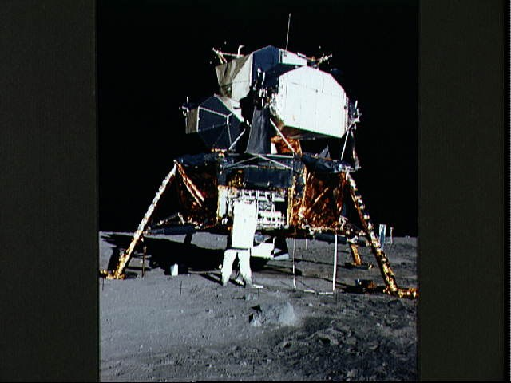
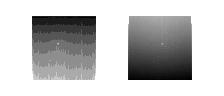

Observa el destinoObserve the destination
Ubica el planeta o la Luna y relaciona sus condiciones con los equipos enviados.Locate the planet or Moon and connect its conditions with the spacecraft sent there.
Ir al sistema solarGo to the solar systemUN VIAJE POR NUESTRO VECINDARIO CÓSMICO
Las misiones terminan, pero sus descubrimientos permanecen.

NUESTROS EQUIPOS
EL UNIVERSO EN MOVIMIENTO
Recorre los ocho planetas en tres dimensiones. Gira la cámara, acércate y elige tu próximo destino.
Selecciona un planeta y explora los equipos que fueron enviados.
Visualización artística 3D · tamaños, distancias y velocidades no están a escala.
GUÍA DE EXPLORACIÓNEXPLORATION GUIDE
Tres pasos para convertir tu visita en una experiencia de aprendizaje: observa, investiga y explica qué permanece cuando termina una misión.Three steps to turn your visit into a learning experience: observe, investigate and explain what remains when a mission ends.
Ubica el planeta o la Luna y relaciona sus condiciones con los equipos enviados.Locate the planet or Moon and connect its conditions with the spacecraft sent there.
Ir al sistema solarGo to the solar systemGira las naves en 3D, selecciona sus puntos interactivos y descubre la función de cada componente.Rotate spacecraft in 3D, select interactive hotspots and discover what each component does.
Explorar las navesExplore spacecraftLee las historias, responde las preguntas y distingue las evidencias reales de las simulaciones educativas.Read the stories, answer questions and distinguish real evidence from educational simulations.
Iniciar Echo ProtocolStart Echo ProtocolPregunta para el aula: ¿qué evidencia científica conservarías de una misión y por qué? Usa los instrumentos, la historia y las fuentes del museo para justificar tu respuesta.Classroom question: what scientific evidence from a mission would you preserve, and why? Use the museum’s instruments, mission history and sources to support your answer.
PRIMERA PARADA
Ocho planetas y una Luna por descubrir. Elige un cuerpo celeste para comenzar tu recorrido.
El mundo más cercano al Sol. MESSENGER cartografió su superficie y estudió su campo magnético.The closest world to the Sun. MESSENGER mapped its surface and studied its magnetic field.
EXPLORAR CUERPO →Un archivo de impactos y huellas humanas. Surveyor 3 estudió el suelo antes de la llegada de Apollo.A record of impacts and human footprints. Surveyor 3 studied its soil before Apollo arrived.
EXPLORAR CUERPO →Nuestro hogar visto desde la inmensidad. Los observatorios espaciales permiten estudiar el universo desde fuera de la atmósfera.Our home seen from the vastness of space. Space observatories study the universe from beyond the atmosphere.
EXPLORAR CUERPO →El planeta que seguimos intentando comprender. Opportunity encontró evidencias de ambientes modificados por agua.The planet we are still trying to understand. Opportunity found evidence of environments altered by water.
EXPLORAR CUERPO →Un mundo de anillos de hielo y roca. Cassini estudió el planeta y sus lunas, entre ellas Titán y Encélado.A world of ice and rock rings. Cassini studied the planet and moons including Titan and Enceladus.
EXPLORAR CUERPO →Sus densas nubes ocultan una superficie de temperaturas extremas. Magellan la estudió mediante radar.Its thick clouds conceal a surface of extreme temperatures. Magellan studied it using radar.
EXPLORAR CUERPO →El gigante del sistema solar. Pioneer 10 abrió el camino a su exploración y al estudio de su radiación.The giant of the solar system. Pioneer 10 pioneered its exploration and the study of its radiation.
EXPLORAR CUERPO →Un gigante helado que gira casi de lado. Voyager 2 permitió observarlo de cerca.An ice giant that rotates almost on its side. Voyager 2 observed it up close.
EXPLORAR CUERPO →Un gigante helado distante. Voyager 2 exploró su atmósfera y su sistema de lunas.A distant ice giant. Voyager 2 explored its atmosphere and system of moons.
EXPLORAR CUERPO →↓ DESPLÁZATE PARA DESCUBRIR
ARCHIVO VISUAL · MARTEVISUAL ARCHIVE · MARS
Una ilustración oficial de Ingenuity y dos registros históricos de Opportunity muestran distintas etapas de la exploración de Marte.An official Ingenuity illustration and two historical Opportunity records show different stages of Mars exploration.

Ilustración artística oficial de NASA/JPL de 2020: Ingenuity con el rover Perseverance al fondo. No es una fotografía de la superficie marciana.Official 2020 NASA/JPL artist’s concept: Ingenuity with the Perseverance rover in the background. It is not a photograph of the Martian surface.
Fuente NASANASA source ↗NASA/JPL-Caltech
Pancam, 10 de junio de 2018. Los puntos blancos son ruido de cámara; la franja negra inferior representa datos no recibidos.Pancam, June 10, 2018. White speckles are camera noise; the black lower band represents data not received.
Fuente NASANASA source ↗NASA/JPL-Caltech/Cornell/ASU
Las versiones completas de estas dos imágenes nunca llegaron. No son la misma fotografía que la última transmisión.The full versions of these two images never arrived. They differ from the last transmitted photograph.
Fuente NASANASA source ↗NASA/JPL-Caltech/Cornell/ASUTRANSPARENCIA · ARCHIVO DE RECURSOSTRANSPARENCY · RESOURCE ARCHIVE
Cosmic Legacy es un museo educativo independiente creado para NASA Space Apps Challenge. No es un producto oficial ni cuenta con aval de NASA o JPL.Cosmic Legacy is an independent educational museum created for NASA Space Apps Challenge. It is not an official product or endorsed by NASA or JPL.
Consulta las fuentes científicas, las atribuciones disponibles y las condiciones de uso. El inventario técnico distingue las referencias de los archivos cuya procedencia está documentada; no todos tienen una identificación de origen completa.Explore scientific sources, available attributions and usage terms. The technical inventory distinguishes references from assets with documented provenance; some assets lack complete source identification.
El museo conecta los datos y las historias de misiones con una experiencia de aprendizaje. Las fotografías científicas, las representaciones tridimensionales y las simulaciones tienen propósitos distintos.The museum connects mission data and stories with an educational experience. Scientific photographs, 3D representations and simulations serve different purposes.
Panoramas y testimonios de las misiones, con sus referencias NASA y JPL.Mission panoramas and records, with NASA and JPL references.
Modelos y texturas de apoyo para aprender cómo funcionan las misiones.Supporting models and textures for learning how missions work.
Órbitas ilustrativas y decisiones de misión; no representan telemetría real.Illustrative orbits and mission decisions; not actual telemetry.
Imágenes y modelos identificados como representaciones educativas.Images and models identified as educational representations.
PIA23720: concepto artístico de Ingenuity y Perseverance publicado en 2020. No corresponde a una fotografía real tomada en Marte.PIA23720: artist’s concept of Ingenuity and Perseverance published in 2020. It is not an actual photograph taken on Mars.
NASA/JPL-Caltech · PIA23720Consultar referencia NASAView NASA reference ↗Explorar biblioteca de recursos (37 archivos)Explore resource library (37 assets) ↗ Fuentes científicas, créditos y fichas técnicas consultables.Includes SHA-256 hashes, available provenance, links and verification limitations.
models/opportunity.glbReferencia NASA compatibleCompatible NASA reference
Referencia: NASA/JPL-Caltech
models/cassini.glbReferencia NASA compatibleCompatible NASA reference
Referencia: NASA / Visualization Technology Applications and Development (VTAD)
models/near-shoemaker.glbReferencia NASA compatibleCompatible NASA reference
Referencia: NASA 3D Resources
models/pioneer-10.glbReferencia NASA compatibleCompatible NASA reference
Referencia: NASA/JPL/Eyes on the Solar System
models/ingenuity.glbReferencia NASA compatibleCompatible NASA reference
Referencia: NASA/JPL-Caltech
models/venus.glbReferencia NASA compatibleCompatible NASA reference
Referencia: NASA / Visualization Technology Applications and Development (VTAD)
models/jupiter.glbReferencia NASA compatibleCompatible NASA reference
Referencia: NASA / Visualization Technology Applications and Development (VTAD)
models/saturno.glbReferencia NASA compatibleCompatible NASA reference
Referencia: NASA / Visualization Technology Applications and Development (VTAD)
models/urano.glbReferencia NASA compatibleCompatible NASA reference
Referencia: NASA / Visualization Technology Applications and Development (VTAD)
models/neptuno.glbReferencia NASA compatibleCompatible NASA reference
Referencia: NASA / Visualization Technology Applications and Development (VTAD)
models/tierra.glbReferencia NASA compatibleCompatible NASA reference
Referencia: NASA / Visualization Technology Applications and Development (VTAD)
models/marte.glbReferencia NASA compatibleCompatible NASA reference
Referencia: NASA/JPL-Caltech
models/mercurio.glbReferencia visual o científicaVisual or scientific reference
Referencia: NASA / Visualization Technology Applications and Development (VTAD)
models/luna.glbReferencia visual o científicaVisual or scientific reference
Referencia: NASA Scientific Visualization Studio / Dan Gallagher (referencia / reference)
models/apollo-11.glbRecreación generada con IAAI-generated recreation
Modelo del proyecto / Project model
models/surveyor-3.glbRecreación generada con IAAI-generated recreation
Modelo del proyecto / Project model
img/astronauta-eagle.jpgReferencia visual o científicaVisual or scientific reference
Referencia: NASA; fotógrafo y fotograma pendientes / photographer and frame pending
Apollo 11 — historical image archive, AS11-40-5927 (candidate) ↗
img/eagle.jpgReferencia visual o científicaVisual or scientific reference
Referencia: NASA; fotógrafo y fotograma pendientes / photographer and frame pending
Apollo 11 — historical image archive, AS11-40-5927 (candidate) ↗
img/ingenuity.jpgReferencia visual o científicaVisual or scientific reference
Referencia: NASA/JPL-Caltech/ASU/MSSS (referencia / reference)
PIA26236 · Perseverance Spots Ingenuity at Its Final Airfield (reference) ↗
img/near.jpgReferencia visual o científicaVisual or scientific reference
Referencia: NASA (referencia / reference)
img/pioneer.jpgReferencia visual o científicaVisual or scientific reference
Referencia: NASA (referencia / reference)
solar-assets/jupiter.jpgTextura ilustrativaIllustrative texture
Referencia: Documentación del proyecto / Project documentation
solar-assets/luna.jpgTextura ilustrativaIllustrative texture
Referencia: Documentación del proyecto / Project documentation
solar-assets/marte.jpgTextura ilustrativaIllustrative texture
Referencia: Documentación del proyecto / Project documentation
solar-assets/mercurio.jpgTextura ilustrativaIllustrative texture
Referencia: Documentación del proyecto / Project documentation
solar-assets/neptuno.jpgTextura ilustrativaIllustrative texture
Referencia: Documentación del proyecto / Project documentation
solar-assets/saturno.jpgTextura ilustrativaIllustrative texture
Referencia: Documentación del proyecto / Project documentation
solar-assets/sol.jpgTextura ilustrativaIllustrative texture
Referencia: Documentación del proyecto / Project documentation
solar-assets/tierra.jpgTextura ilustrativaIllustrative texture
Referencia: Documentación del proyecto / Project documentation
solar-assets/urano.jpgTextura ilustrativaIllustrative texture
Referencia: Documentación del proyecto / Project documentation
solar-assets/venus.jpgTextura ilustrativaIllustrative texture
Referencia: Documentación del proyecto / Project documentation
legacy-assets/PIA22909-4096.webpArchivo científico documentadoDocumented science asset
NASA/JPL-Caltech/Cornell/ASU
legacy-assets/PIA22909-8192.webpArchivo científico documentadoDocumented science asset
NASA/JPL-Caltech/Cornell/ASU
legacy-assets/PIA22929.jpgArchivo científico documentadoDocumented science asset
NASA/JPL-Caltech/Cornell/ASU
legacy-assets/PIA22930.jpgArchivo científico documentadoDocumented science asset
NASA/JPL-Caltech/Cornell/ASU
legacy-assets/PIA22909-reconstruccion-v2.webpRecreación generada con IAAI-generated recreation
NASA/JPL-Caltech/Cornell/ASU + proyecto / project
Referencias presentes en el código para historias, anatomía, planetas y la simulación de Opportunity. Los enlaces del desafío deben verificarse por separado.References present in the code for stories, anatomy, planets and the Opportunity simulation. Challenge-listed eligibility must be checked separately.
Google / model-viewer contributors · Apache-2.0
The Manrope Project Authors · SIL OFL 1.1
The Cormorant Project Authors / Christian Thalmann · SIL OFL 1.1
Las fuentes y el visor se cargan desde servicios externos; no se incluyen sus binarios en el ZIP. El código propio corresponde al equipo; no se concede una licencia abierta nueva sin su autorización.Fonts and viewer are loaded from external services; their binaries are not bundled. The team owns its original contributions; no new open license is granted without authorization.
Se declara asistencia de IA en programación, depuración, redacción educativa, traducción, modelos simplificados de Apollo 11 y Surveyor 3 y reconstrucción artística de PIA22909. ChatGPT (OpenAI) se utilizó en la revisión, corrección y documentación del proyecto y creó las recreaciones identificadas como IA, según confirma el equipo. La entrega oficial debe enumerar todas las herramientas empleadas.AI assistance is disclosed for coding, debugging, educational writing, translation, simplified Apollo 11 and Surveyor 3 models and the artistic PIA22909 reconstruction. ChatGPT (OpenAI) was used for project review, corrections and documentation and created the identified AI recreations, as confirmed by the team. All tools used must be listed in the official submission.
Los textos narrativos son interpretaciones educativas; las simulaciones no son telemetría NASA. El panorama original se muestra primero. Las recreaciones visuales están identificadas.Narrative texts are educational interpretations; simulations are not NASA telemetry. The original panorama is shown first. Visual recreations are labeled.
La aprobación corresponde a los organizadores; registro del equipo, fecha real de desarrollo, derechos y recurso específico del desafío deben confirmarse antes de enviar.Approval rests with the organizers; team registration, actual development date, rights and challenge-specific resource must be confirmed before submission.